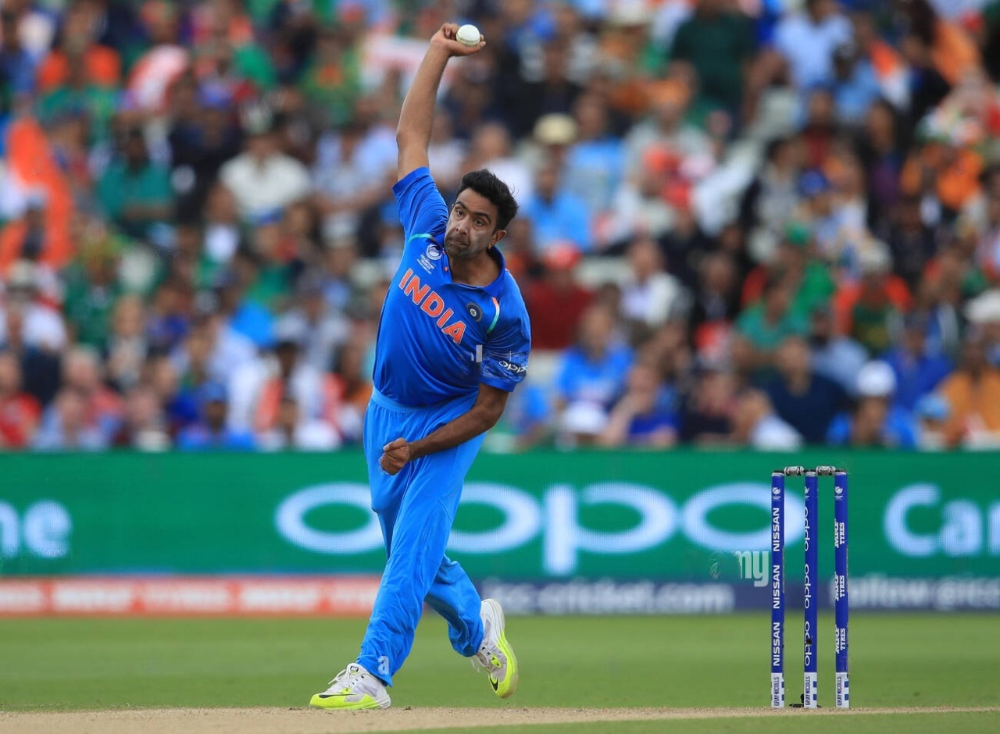

Traveling: I have a passion for exploring new places, cultures, and experiences. Whether it's a weekend getaway to a nearby city or an international adventure, I love immersing myself in different environments and meeting new people. Traveling broadens my perspective and inspires me in many aspects of my life.
Books are a significant part of my life. I enjoy reading a wide range of genres, from fiction and fantasy to biographies and self-development. Some of my favorite books include Ponniyin Selvan, Velpaari ,etc. Reading not only provides an escape but also fuels my creativity and knowledge.
I have a keen interest in watching movies especially tamil movies. I watch lots of movies when I am bored. I like to watch movies with my friends. Some of my favorite actors are Thalapathy Vijay, Sivakarthikeyan, Karthi.
I am fascinated in playing video games in my mobile phone. I like to play video games with my friends. I play games like EFootball, Freefire, Clash of Clans, etc.
I love to play cricket as it helps me to reduce stress. Some of my favourite cricket players are as below
click on the players pictures to know more:-
| Player name | RUNS IN ODI | RUNS IN T20's(in IPL) | WICKETS/STUMPINGS IN ODI | WICKETS/STUMPINGS IN T20's(in IPL) | |
|---|---|---|---|---|---|
| MAHENDRA SINGH DHONI | 10773 runs | 7432 runs | 123 stumpings | 42 stumpings |
|
| RAVINDRA JADEJA | 2756 runs | 2959 runs | 220 wickets | 160 wickets |
|
| RAVICHANDRAN ASHWIN | 707 runs | 800 runs | 156 wickets | 180 wickets |  |